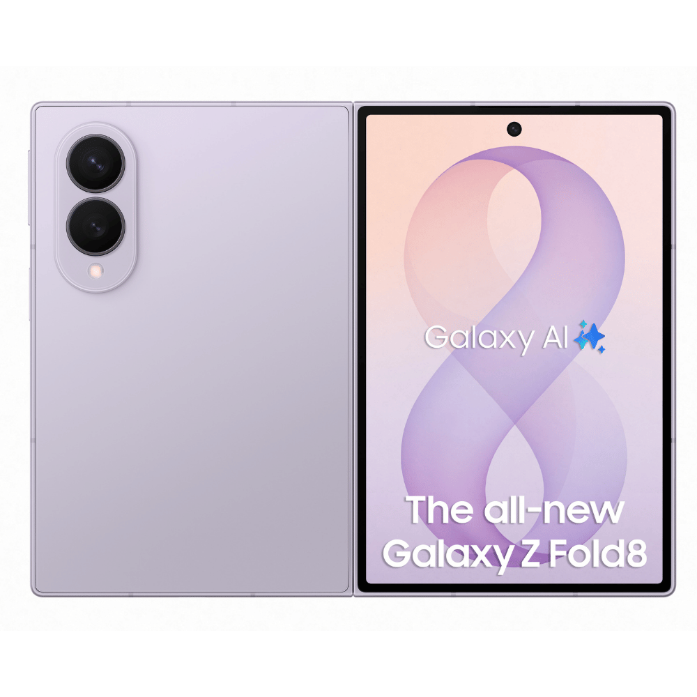
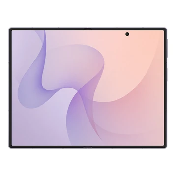

1. Giới thiệu tổng quan
Samsung Galaxy Z Fold 8 là thế hệ điện thoại thông minh màn hình gập cao cấp nhất của Samsung. Sản phẩm mang đến sự kết hợp hoàn hảo giữa tính di động của một chiếc smartphone thông thường và không gian hiển thị rộng lớn của một chiếc máy tính bảng.
Mục đích sử dụng: Galaxy Z Fold 8 được thiết kế dành cho người dùng chuyên nghiệp, doanh nhân, lập trình viên và những ai cần một thiết bị mạnh mẽ để đa nhiệm công việc, xử lý tài liệu, giải trí đỉnh cao và sáng tạo nội dung mọi lúc mọi nơi.
2. Hình ảnh minh họa
Dưới đây là một số hình ảnh thiết kế ấn tượng của Samsung Galaxy Z Fold 8:


3. Các đặc điểm nổi bật
- Màn hình gập Flex Display: Màn hình chính AMOLED 8.0 inch với tần số quét 120Hz và nếp gập gần như vô hình.
- Hiệu năng vượt trội: 8 Gen 5 for Galaxy cực kỳ mạnh mẽ, tối ưu hóa cho tác vụ AI và đồ họa nặng.8 Gen 5 for Galaxy cực kỳ mạnh mẽ, tối ưu hóa cho tác vụ AI và đồ họa nặng.
- Hệ thống camera chuyên nghiệp: Cụm camera 200MP hỗ trợ chụp ảnh chuẩn điện ảnh và zoom quang học vượt trội.
- Thiết kế mỏng nhẹ & bền bỉ: Khung viền Titanium kết hợp bản lề Flex Hinge thế hệ mới đạt chuẩn chống nước IPX8.
- Tính năng Galaxy AI thế hệ mới: Hỗ trợ dịch thuật trực tiếp, tóm tắt tài liệu tự động và khoanh vùng tìm kiếm thông minh.
4. Bảng thông số kỹ thuật chi tiết
| Hạng mục | Màn hình chính | Màn hình phụ |
|---|---|---|
| Kích thước | 8.0 inches | 6.3 inches |
| Công nghệ tấm nền | Dynamic AMOLED 2X | Dynamic AMOLED 2X |
| Tần số quét | 120Hz Adaptive | 120Hz Adaptive |
| Độ sáng tối đa | 3000 nits | 2800 nits |
5. Đánh giá ưu điểm và hạn chế
Ưu điểm
- Khả năng đa nhiệm cực tốt với tính năng chia ba màn hình và thanh tác vụ Taskbar thông minh.
- Màn hình hiển thị xuất sắc, độ sáng cao dễ dàng sử dụng ngoài trời nắng.
- Thời lượng pin được cải thiện đáng kể cùng công nghệ sạc nhanh tiến tiến.
Hạn chế
- Giá thành sản phẩm còn khá cao so với mặt bằng chung.
- Kích thước và trọng lượng nhỉnh hơn so với các dòng smartphone dạng thanh truyền thống.
6. Liên kết tham khảo
Bạn có thể tham khảo thông tin chính thức về sản phẩm tại các liên kết dưới đây: